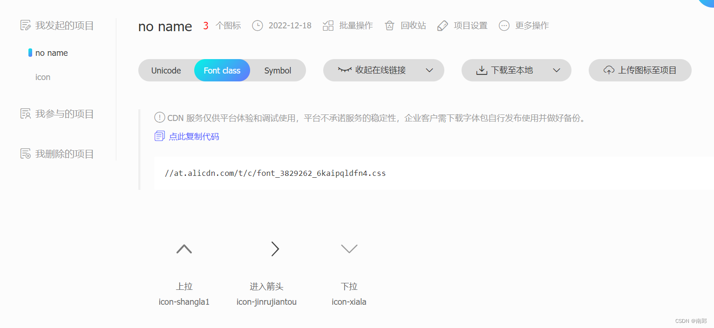
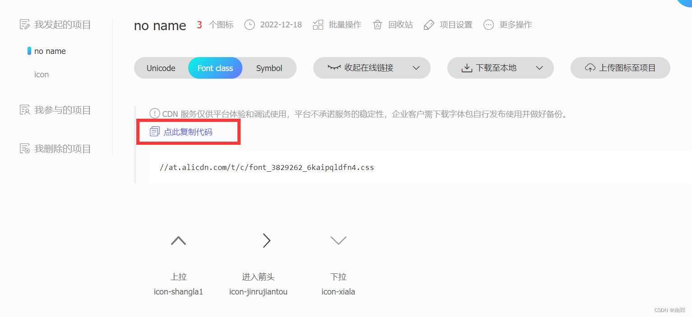
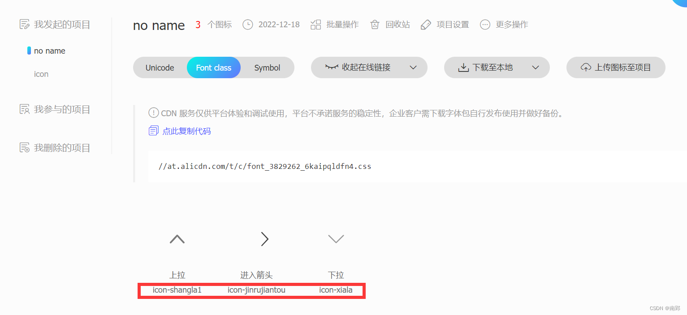
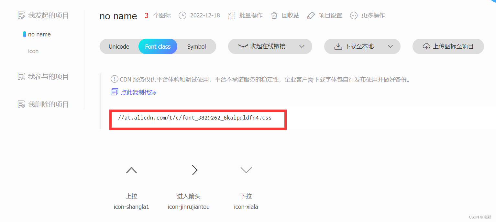
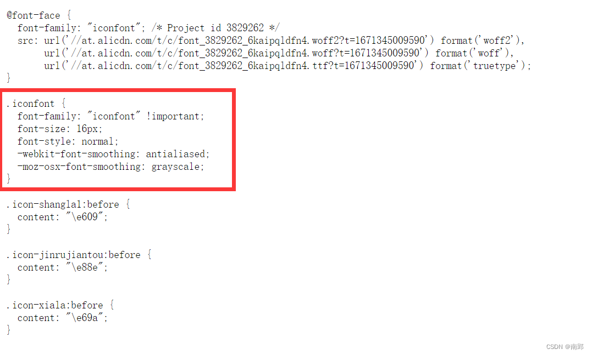
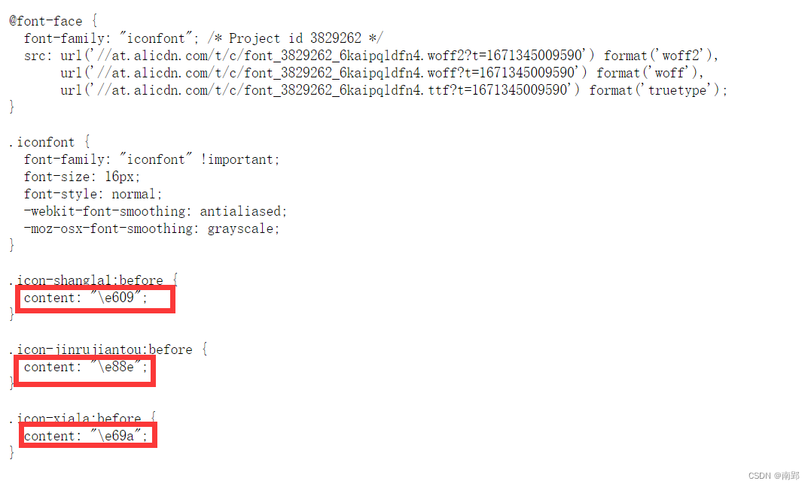
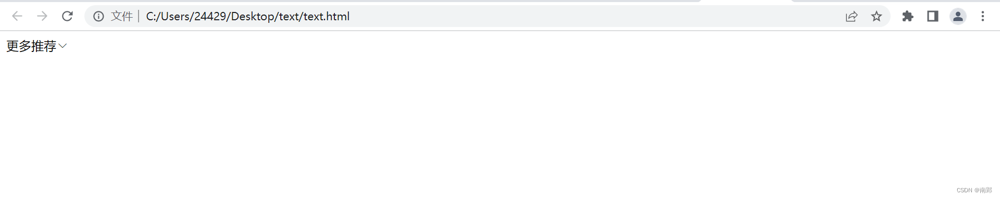

最近学习CSS中研究了一下阿里妈妈出品的阿里iconfont图标的引入方法。网页的各种常用图标引入不愁啦~
主要分为线上引用和本地引用（更稳定）。
一、线上引用
不足：线上引用比较依赖阿里iconfont图标平台的稳定性
优势：方便，不需下载文件至本地，推荐日常练习时使用
1. 寻找图标
- 图标管理->我的项目->然后新建项目
- 选择图标添加到购物车->购物车中选择加入项目，将图标加入项目
- 打开项目

此时可以看到我们将三个箭头图标添加进了项目中。
2. 引入图标
首先复制链接（点此复制代码）

然后在css中<head></head>内插入<link>，注意加上http:
<link rel="stylesheet" href="http://at.alicdn.com/t/c/font_3829262_6kaipqldfn4.css">此时需要在html结构中引用这些图标
可以看到，红框中为三个图标各自对应的类名

在引入时，分别引入这些类名即可
<!DOCTYPE html>
<html lang="en">
<head>
<meta charset="UTF-8">
<meta http-equiv="X-UA-Compatible" content="IE=edge">
<meta name="viewport" content="width=device-width, initial-scale=1.0">
<title>Document</title>
<!-- 引入在线链接 -->
<link rel="stylesheet" href="http://at.alicdn.com/t/c/font_3829262_6kaipqldfn4.css">
<style>
span {
/* 图标颜色变为粉色 */
color: pink;
}
</style>
</head>
<body>
<!-- 引入各图标，iconfont为图标字体类名，必写 -->
<span class="iconfont icon-shangla1"></span>
<span class="iconfont icon-jinrujiantou"></span>
<span class="iconfont icon-xiala"></span>
</body>
</html>3. 更改图标
- 更改颜色：可直接在文件样式style中更改
- 更改字体：需要复制.iconfont代码，在其中更改
font-size
获取.iconfont：点击红框处，在弹出页面找到.iconfont


二、本地引用
不足：没有线上引用方便
优势：稳定
1. 下载图标
- 图标管理->我的项目->然后新建项目
- 选择图标添加到购物车->购物车中选择加入项目，将图标加入项目
- 打开项目->下载到本地->放入本地项目的根目录下

fonts为下载的图标文件夹
2. 引入图标
在文件中引入iconfont.css，fonts为图标文件夹名称
<link rel="stylesheet" href="fonts/iconfont.css">然后在html结构中引用这些图标，与线上引用类似
<!DOCTYPE html>
<html lang="en">
<head>
<meta charset="UTF-8">
<meta http-equiv="X-UA-Compatible" content="IE=edge">
<meta name="viewport" content="width=device-width, initial-scale=1.0">
<title>Document</title>
<!-- 引入图标文件 -->
<link rel="stylesheet" href="fonts/iconfont.css">
<style>
span {
/* 图标颜色变为粉色 */
color: pink;
}
</style>
</head>
<body>
<!-- 引入各图标，iconfont为图标字体类名，必写 -->
<span class="iconfont icon-shangla1"></span>
<span class="iconfont icon-jinrujiantou"></span>
<span class="iconfont icon-xiala"></span>
</body>
</html>PS: 添加 font-family 和 content 的引入方法
以上方法都是需要在元素中加入class属性。
在使用过程中，我发现了另一种引入方法：此方法不需要在元素中添加class属性，支持伪元素选择器添加图标
<!DOCTYPE html>
<html lang="en">
<head>
<meta charset="UTF-8">
<meta http-equiv="X-UA-Compatible" content="IE=edge">
<meta name="viewport" content="width=device-width, initial-scale=1.0">
<title>Document</title>
<!-- 引入线上链接 -->
<link rel="stylesheet" href="http://at.alicdn.com/t/c/font_3829262_6kaipqldfn4.css">
<style>
div::after {
/* content中为下拉符 */
content: '\e69a';
/* 一定要添加font-family属性 */
font-family: 'iconfont';
}
</style>
</head>
<body>
<div>更多推荐</div>
</body>
</html>ps：content中的内容在此找

代码效果如下：

此方法常用于使用伪元素选择器（::before,::after）添加图标时（此时无法在html结构中引入iconfont等class类名）